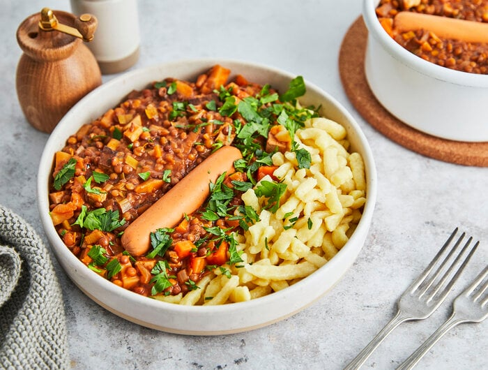

Linsen

Description
Lentils with spaetzle are the traditional, swabian dish. Find out how to make spaetzle yourself here.
Spaetzle are the perfect companion, as thir surface allows them to hold onto the lentils.
Lentials are a great source of protein and fiber, and they are simnply delicious and heartwarming.
There can't be a single week during autumn and winter time whithout lentils and spaetzle in a swabian household.
This recipe is enough for 2 people.
Don't panic, it's super easy! You just have to take your time in the beginning.
Make sure you carry a towl with you!
Ingredients
- A few handfull of brown lentils or Alb leisa - as much as you think you need.
- water
- One onion
- 6 cloves
- Instant vegetable stock for seasoning
Steps
- Cover the lentils with water and let soak for 1 1/2 h.
- Check in between to make sure that there is enough water left
- Cut the onion in half, remove the peel and put the cloves into the onions (into the cut side).
- Bring the lentils to a simmer and cook for ca 45 minutes, until the lentils are soft. Make sure that there is always just enough water in the pot.
- As soon as the lentils are soft, remove the onions and make sure that you also recover all cloves.
- Season the lentils with the instant vegetable stock
- ENJOY!
TIP:While the lentils are soaking you can prepare the spaetzle dough. While the lentils are cooking you can cook the spaetzle.